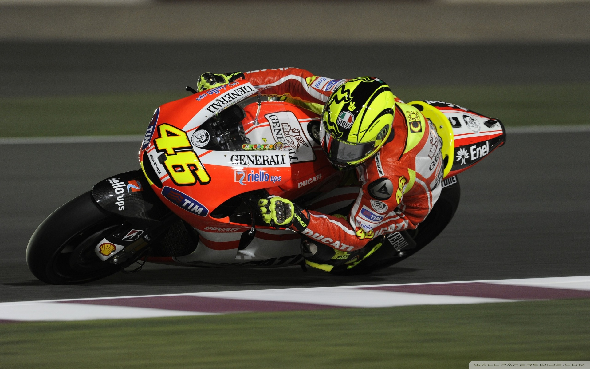

CAREER STATISTICS
Valentino Rossi has taken part in 431 of the 974 Grand Prix events staged since the start of the World Championship series back in 1949. This means that he has taken part in around 44.2% of all Grand Prix events. Rossi has finished in a point-scoring position a record 372 times in the 431 GP races he has started. Rossi has won GP races on seven different motorcycles: 125cc Aprilia, 250cc Aprilia, 500cc Honda, 990cc Honda, 990cc Yamaha, 800cc Yamaha and 1000cc Yamaha. He is the only rider to have won on 500cc two-stroke, 990cc four-stroke, 800cc four-stroke and 1000cc four-stroke machines.
During his career, Rossi has competed at 38 different Grand Prix circuits. Of these 38 circuits, he has taken at least one GP win at 29 of them. No other rider in the history of motorcycle Grand Prix racing has won at as many different circuits as Rossi. His closest rival is Mick Doohan with 24. The circuits at which Rossi has had most GP wins are Catalunya and Assen, where he has taken victory 10 times at each. Rossi’s victory at the Dutch TT back in 2017, 20 years and 311 days after his first GP win in the 125cc class at Brno in 1996, made him the rider with the longest winning career across all classes
There are 16 years 351 days between his first premier class win (Donington/500cc/2000) and his latest (Assen/MotoGP/2017) (record) ahead of Alex Barros (11 years 204 days) and Dani Pedrosa (11 years 182 days). At the Andalusian GP last year, Rossi set the record of the longest time between first and last premier class podiums to 20 years and 87 days, becoming the first rider to reach the milestone of 20 years. He also extended the record of the longest time between first and last podium in GP racing to 23 years and 355 days. Aged 38 years 129 days old at the 2017 Dutch TT, Rossi is the oldest four-stroke MotoGP winner, ahead of Troy Bayliss (37 years 213 days). In addition, Rossi is the seventh-oldest premier class winner behind Fergus Anderson (44 years 237 days), Jack Findlay (42 years 85 days), Les Graham (41 years 21 days), Jack Ahearn (39 years 327 days), Harold Daniell (39 years 240 days) and Frantisek Stastny (38 years 247 days).


Valentino Rossi - Grand Prix Results Summary:
- World Championships: 9 (1 x 125cc, 1 x 250cc, 7 x MotoGP)
- 2009: 800cc MotoGP, Yamaha
- 2008: 800cc MotoGP, Yamaha
- 2005: 990cc MotoGP, Yamaha
- 2004: 990cc MotoGP, Yamaha
- 2003: 990cc MotoGP, Honda
- 2002: 990cc MotoGP, Honda
- 2001: 500cc, Honda
- 1999: 250cc, Aprilia
- 1997: 125cc, Aprilia
- Race Wins: 115 (12 x 125cc, 14 x 250cc, 89 x MotoGP)
- Podiums: 235 (15 x 125cc, 21 x 250c, 199 x MotoGP)
- Pole Positions: 65 (5 x 125cc, 5 x 250cc, 55 x MotoGP)
- Fastest Laps: 96 (9 x 125cc, 11 x 250cc, 76 x MotoGP)